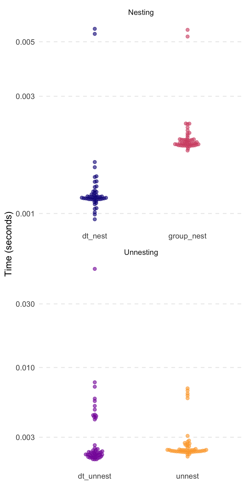
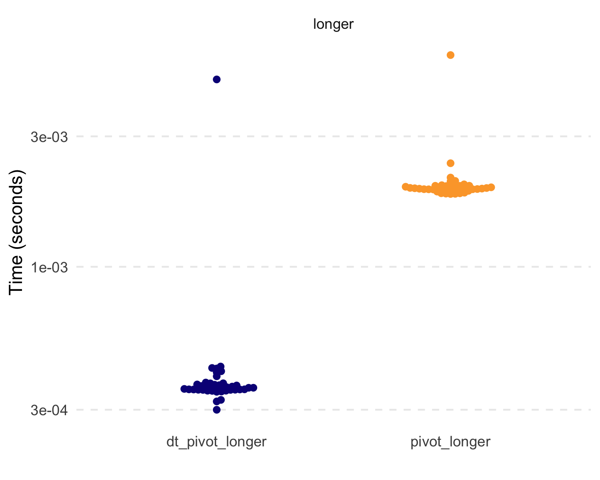
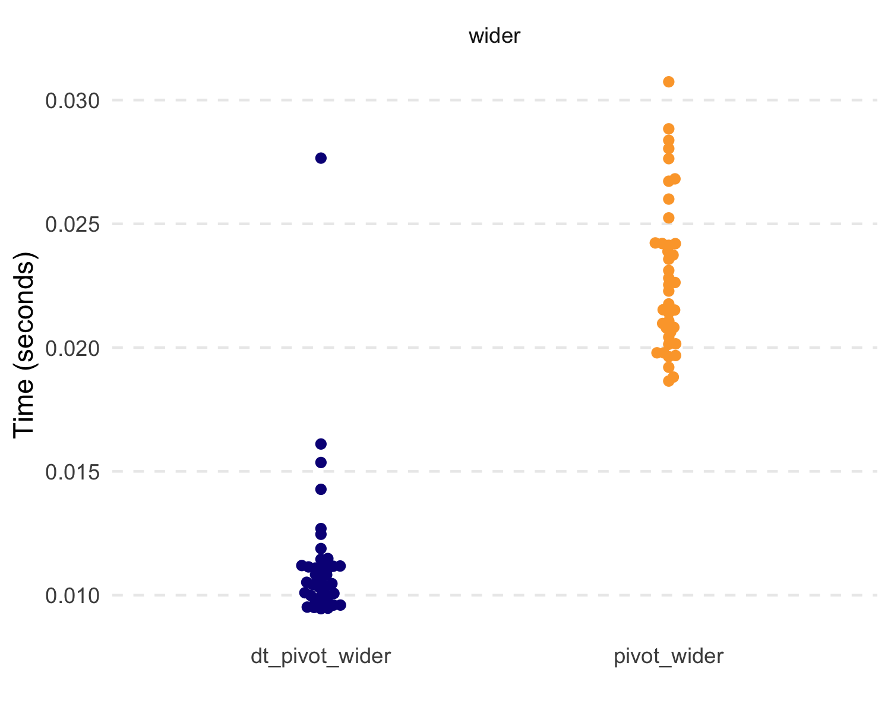
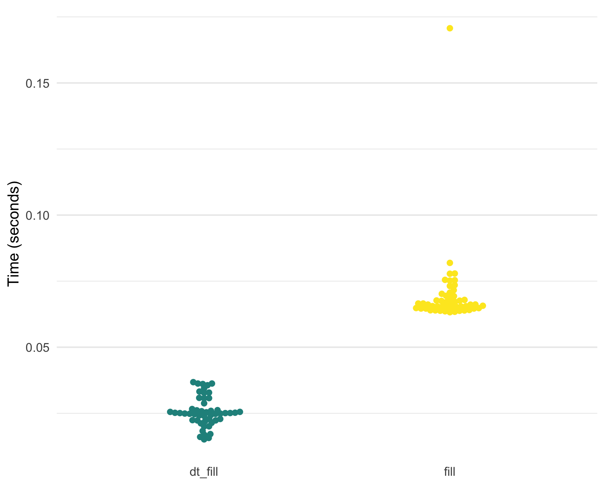
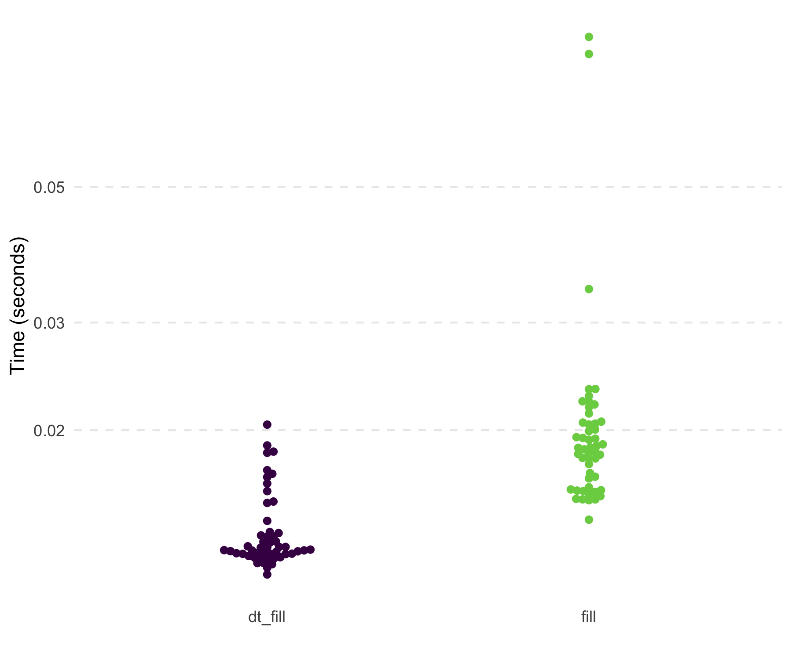
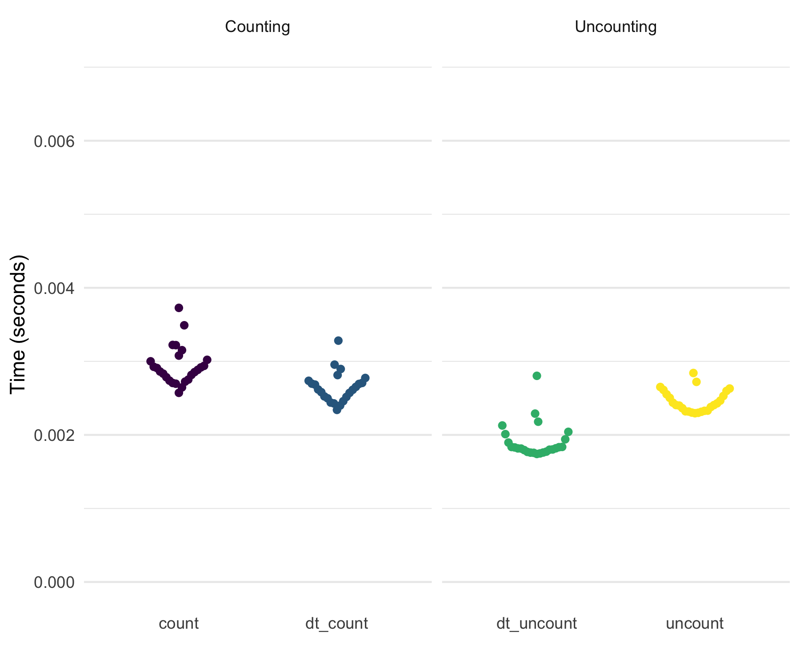
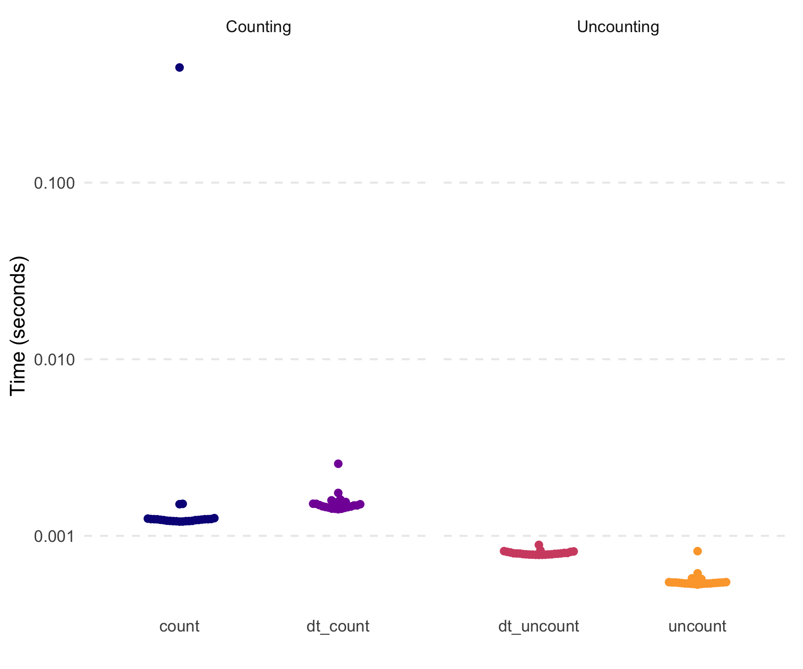

Note: The expansion of dtplyr has made some of the functionality in tidyfast redundant. See dtplyr for a list of functions that are handled within that framework.
The goal of tidyfast is to provide fast and efficient alternatives to some tidyr (and a few dplyr) functions using data.table under the hood. Each have the prefix of dt_ to allow for autocomplete in IDEs such as RStudio. These should compliment some of the current functionality in dtplyr (but notably does not use the lazy_dt() framework of dtplyr). This package imports data.table and cpp11 (no other dependencies).
These are, in essence, translations from a more tidyverse grammar to data.table. Most functions herein are in places where, in my opinion, the data.table syntax is not obvious or clear. As such, these functions can translate a simple function call into the fast, efficient, and concise syntax of data.table.
The current functions include:
Nesting and unnesting (similar to dplyr::group_nest() and tidyr::unnest()):
-
dt_nest()for nesting data tables -
dt_unnest()for unnesting data tables -
dt_hoist()for unnesting vectors in a list-column in a data table
Pivoting (similar to tidyr::pivot_longer() and tidyr::pivot_wider())
-
dt_pivot_longer()for fast pivoting usingdata.table::melt() -
dt_pivot_wider()for fast pivoting usingdata.table::dcast()
If Else (similar to dplyr::case_when()):
-
dt_case_when()fordplyr::case_when()syntax with the speed ofdata.table::fifelse()
Fill (similar to tidyr::fill())
-
dt_fill()for fillingNAvalues with values before it, after it, or both. This can be done by a grouping variable (e.g. fill inNAvalues with values within an individual).
Count and Uncount (similar to tidyr::uncount() and dplyr::count())
-
dt_count()for fast counting by group(s) -
dt_uncount()for creating full data from a count table
Separate (similar to tidyr::separate())
-
dt_separate()for splitting a single column into multiple based on a match within the column (e.g., column with values like “A.B” could be split into two columns by using the period as the separator where column 1 would have “A” and 2 would have “B”). It is built ondata.table::tstrsplit(). This is not well tested yet and lacks some functionality oftidyr::separate().
Adjust data.table print options
-
dt_print_options()for adjusting the options forprint.data.table()
General API
tidyfast attempts to convert syntax from tidyr with its accompanying grammar to data.table function calls. As such, we have tried to maintain the tidyr syntax as closely as possible without hurting speed and efficiency. Some more advanced use cases in tidyr may not translate yet. We try to be transparent about the shortcomings in syntax and behavior where known.
Each function that takes data (labeled as dt_ in the package docs) as its first argument automatically coerces it to a data table with as.data.table() if it isn’t already a data table. Each of these functions will return a data table.
Installation
You can install the stable version from CRAN with:
install.packages("tidyfast")or you can install the development version from GitHub with:
# install.packages("remotes")
remotes::install_github("TysonStanley/tidyfast")Examples
The initial versions of the nesting and unnesting functions were shown in a preprint. Herein is shown some simple applications and the functions’ speed/efficiency.
library(tidyfast)Nesting and Unnesting
The following data table will be used for the nesting/unnesting examples.
set.seed(84322)
library(data.table)
library(dplyr) # to compare with case_when()
library(tidyr) # to compare with fill() and separate()
library(ggplot2) # figures
library(ggbeeswarm) # figures
dt <- data.table(
x = rnorm(1e5),
y = runif(1e5),
grp = sample(1L:5L, 1e5, replace = TRUE),
nested1 = lapply(1:10, sample, 10, replace = TRUE),
nested2 = lapply(c("thing1", "thing2"), sample, 10, replace = TRUE),
id = 1:1e5)To make all the comparisons herein more equal, we will set the number of threads that data.table will use to 1.
setDTthreads(1)We can nest this data using dt_nest():
nested <- dt_nest(dt, grp)
nested
#> Key: <grp>
#> grp data
#> <int> <list>
#> 1: 1 <data.table[19638x5]>
#> 2: 2 <data.table[19987x5]>
#> 3: 3 <data.table[20033x5]>
#> 4: 4 <data.table[20269x5]>
#> 5: 5 <data.table[20073x5]>We can also unnest this with dt_unnest():
dt_unnest(nested, col = data)
#> Key: <grp>
#> grp x y nested1
#> <int> <num> <num> <list>
#> 1: 1 -1.1813164 0.004599736 2,2,1,2,1,1,...
#> 2: 1 -1.0384420 0.853208540 2,8,4,6,7,7,...
#> 3: 1 -0.6247028 0.072652533 4,2,2,1,1,1,...
#> 4: 1 -1.3651514 0.569079215 1,1,1,3,6,2,...
#> 5: 1 0.1403744 0.864617284 10, 1, 1, 1, 8, 1,...
#> ---
#> 99996: 5 -0.3437795 0.995197776 2,1,2,2,2,1,...
#> 99997: 5 1.6157744 0.241735719 10, 1, 1, 1, 8, 1,...
#> 99998: 5 -0.1321246 0.885283934 2,3,3,2,2,4,...
#> 99999: 5 -1.7019715 0.524621296 5,4,3,3,3,2,...
#> 100000: 5 0.3821493 0.032851280 2,8,4,6,7,7,...
#> nested2 id
#> <list> <int>
#> 1: thing2,thing2,thing2,thing2,thing2,thing2,... 2
#> 2: thing2,thing2,thing2,thing2,thing2,thing2,... 8
#> 3: thing1,thing1,thing1,thing1,thing1,thing1,... 15
#> 4: thing1,thing1,thing1,thing1,thing1,thing1,... 17
#> 5: thing2,thing2,thing2,thing2,thing2,thing2,... 20
#> ---
#> 99996: thing1,thing1,thing1,thing1,thing1,thing1,... 99983
#> 99997: thing2,thing2,thing2,thing2,thing2,thing2,... 99990
#> 99998: thing2,thing2,thing2,thing2,thing2,thing2,... 99994
#> 99999: thing2,thing2,thing2,thing2,thing2,thing2,... 99996
#> 100000: thing2,thing2,thing2,thing2,thing2,thing2,... 99998
#> data
#> <list>
#> 1: <data.table[19638x5]>
#> 2: <data.table[19638x5]>
#> 3: <data.table[19638x5]>
#> 4: <data.table[19638x5]>
#> 5: <data.table[19638x5]>
#> ---
#> 99996: <data.table[20073x5]>
#> 99997: <data.table[20073x5]>
#> 99998: <data.table[20073x5]>
#> 99999: <data.table[20073x5]>
#> 100000: <data.table[20073x5]>When our list columns don’t have data tables (as output from dt_nest()) we can use the dt_hoist() function, that will unnest vectors. It keeps all the other variables that are not list-columns as well.
dt_hoist(dt, nested1, nested2)
#> x y grp id nested1 nested2
#> <num> <num> <int> <int> <int> <char>
#> 1: 0.1720703 0.3376675 2 1 1 thing1
#> 2: 0.1720703 0.3376675 2 1 1 thing1
#> 3: 0.1720703 0.3376675 2 1 1 thing1
#> 4: 0.1720703 0.3376675 2 1 1 thing1
#> 5: 0.1720703 0.3376675 2 1 1 thing1
#> ---
#> 999996: 0.6268181 0.7851774 1 100000 1 thing2
#> 999997: 0.6268181 0.7851774 1 100000 5 thing2
#> 999998: 0.6268181 0.7851774 1 100000 7 thing2
#> 999999: 0.6268181 0.7851774 1 100000 6 thing2
#> 1000000: 0.6268181 0.7851774 1 100000 7 thing2Speed comparisons (similar to those shown in the preprint) are highlighted below. Notably, the timings are without the nested1 and nested2 columns of the original dt object from above. Also, all dplyr and tidyr functions use a tbl version of the dt table.

Pivoting
Thanks to @markfairbanks, we now have pivoting translations to data.table::melt() and data.table::dcast(). Consider the following example (similar to the example in tidyr::pivot_longer() and tidyr::pivot_wider()):
billboard <- tidyr::billboard
# note the warning - melt is telling us what
# it did with the various data types---logical (where there were just NAs
# and numeric
longer <- billboard %>%
dt_pivot_longer(
cols = c(-artist, -track, -date.entered),
names_to = "week",
values_to = "rank"
)
#> Warning in melt.data.table(data = dt_, id.vars = id_vars, measure.vars = cols,
#> : 'measure.vars' [wk1, wk2, wk3, wk4, ...] are not all of the same type. By
#> order of hierarchy, the molten data value column will be of type 'double'. All
#> measure variables not of type 'double' will be coerced too. Check DETAILS in
#> ?melt.data.table for more on coercion.
longer
#> artist track date.entered week rank
#> <char> <char> <Date> <char> <num>
#> 1: 2 Pac Baby Don't Cry (Keep... 2000-02-26 wk1 87
#> 2: 2Ge+her The Hardest Part Of ... 2000-09-02 wk1 91
#> 3: 3 Doors Down Kryptonite 2000-04-08 wk1 81
#> 4: 3 Doors Down Loser 2000-10-21 wk1 76
#> 5: 504 Boyz Wobble Wobble 2000-04-15 wk1 57
#> ---
#> 24088: Yankee Grey Another Nine Minutes 2000-04-29 wk76 NA
#> 24089: Yearwood, Trisha Real Live Woman 2000-04-01 wk76 NA
#> 24090: Ying Yang Twins Whistle While You Tw... 2000-03-18 wk76 NA
#> 24091: Zombie Nation Kernkraft 400 2000-09-02 wk76 NA
#> 24092: matchbox twenty Bent 2000-04-29 wk76 NA
wider <- longer %>%
dt_pivot_wider(
names_from = week,
values_from = rank
)
wider[, .(artist, track, wk1, wk2)]
#> artist track wk1 wk2
#> <char> <char> <num> <num>
#> 1: 2 Pac Baby Don't Cry (Keep... 87 82
#> 2: 2Ge+her The Hardest Part Of ... 91 87
#> 3: 3 Doors Down Kryptonite 81 70
#> 4: 3 Doors Down Loser 76 76
#> 5: 504 Boyz Wobble Wobble 57 34
#> ---
#> 313: Yankee Grey Another Nine Minutes 86 83
#> 314: Yearwood, Trisha Real Live Woman 85 83
#> 315: Ying Yang Twins Whistle While You Tw... 95 94
#> 316: Zombie Nation Kernkraft 400 99 99
#> 317: matchbox twenty Bent 60 37Notably, there are some current limitations to these: 1) tidyselect techniques do not work across the board (e.g. cannot use start_with() and friends) and 2) the functions are new and likely prone to edge-case bugs.
But let’s compare some basic speed and efficiency. Because of the data.table functions, these are extremely fast and efficient.

#> # A tibble: 4 × 3
#> expression median mem_alloc
#> <chr> <bch:tm> <bch:byt>
#> 1 dt_pivot_longer 360.92µs 1001.23KB
#> 2 pivot_longer 1.93ms 1.73MB
#> 3 dt_pivot_wider 5.62ms 1.99MB
#> 4 pivot_wider 3.96ms 2.71MBIf Else
Also, the new dt_case_when() function is built on the very fast data.table::fiflese() but has syntax like unto dplyr::case_when(). That is, it looks like:
dt_case_when(condition1 ~ label1,
condition2 ~ label2,
...)To show that each method, dt_case_when(), dplyr::case_when(), and data.table::fifelse() produce the same result, consider the following example.
x <- rnorm(1e6)
medianx <- median(x)
x_cat <-
dt_case_when(x < medianx ~ "low",
x >= medianx ~ "high",
is.na(x) ~ "unknown")
x_cat_dplyr <-
case_when(x < medianx ~ "low",
x >= medianx ~ "high",
is.na(x) ~ "unknown")
x_cat_fif <-
fifelse(x < medianx, "low",
fifelse(x >= medianx, "high",
fifelse(is.na(x), "unknown", NA_character_)))
identical(x_cat, x_cat_dplyr)
#> [1] TRUE
identical(x_cat, x_cat_fif)
#> [1] TRUENotably, dt_case_when() is very fast and memory efficient, given it is built on data.table::fifelse().

Fill
A new function is dt_fill(), which fulfills the role of tidyr::fill() to fill in NA values with values around it (either the value above, below, or trying both). This currently relies on the efficient C++ code from tidyr (fillUp() and fillDown()).
x = 1:10
dt_with_nas <- data.table(
x = x,
y = shift(x, 2L),
z = shift(x, -2L),
a = sample(c(rep(NA, 10), x), 10),
id = sample(1:3, 10, replace = TRUE)
)
# Original
dt_with_nas
#> x y z a id
#> <int> <int> <int> <int> <int>
#> 1: 1 NA 3 NA 3
#> 2: 2 NA 4 9 3
#> 3: 3 1 5 NA 1
#> 4: 4 2 6 8 3
#> 5: 5 3 7 NA 2
#> 6: 6 4 8 NA 2
#> 7: 7 5 9 7 3
#> 8: 8 6 10 NA 2
#> 9: 9 7 NA NA 2
#> 10: 10 8 NA 4 2
# All defaults
dt_fill(dt_with_nas, y, z, a, immutable = FALSE)
#> x y z a id
#> <int> <int> <int> <int> <int>
#> 1: 1 NA 3 NA 3
#> 2: 2 NA 4 9 3
#> 3: 3 1 5 9 1
#> 4: 4 2 6 8 3
#> 5: 5 3 7 8 2
#> 6: 6 4 8 8 2
#> 7: 7 5 9 7 3
#> 8: 8 6 10 7 2
#> 9: 9 7 10 7 2
#> 10: 10 8 10 4 2
# by id variable called `grp`
dt_fill(dt_with_nas,
y, z, a,
id = list(id))
#> x y z a id
#> <int> <int> <int> <int> <int>
#> 1: 1 NA 3 NA 3
#> 2: 2 NA 4 9 3
#> 3: 3 1 5 9 1
#> 4: 4 2 6 8 3
#> 5: 5 3 7 8 2
#> 6: 6 4 8 8 2
#> 7: 7 5 9 7 3
#> 8: 8 6 10 7 2
#> 9: 9 7 10 7 2
#> 10: 10 8 10 4 2
# both down and then up filling by group
dt_fill(dt_with_nas,
y, z, a,
id = list(id),
.direction = "downup")
#> x y z a id
#> <int> <int> <int> <int> <int>
#> 1: 1 2 3 9 3
#> 2: 2 2 4 9 3
#> 3: 3 1 5 9 1
#> 4: 4 2 6 8 3
#> 5: 5 3 7 8 2
#> 6: 6 4 8 8 2
#> 7: 7 5 9 7 3
#> 8: 8 6 10 7 2
#> 9: 9 7 10 7 2
#> 10: 10 8 10 4 2In its current form, dt_fill() is faster than tidyr::fill() and uses slightly less memory. Below are the results of filling in the NAs within each id on a 19 MB data set.
x = 1:1e6
dt3 <- data.table(
x = x,
y = shift(x, 10L),
z = shift(x, -10L),
a = sample(c(rep(NA, 10), x), 10),
id = sample(1:3, 10, replace = TRUE))
df3 <- data.frame(dt3)
marks3 <-
bench::mark(
tidyr::fill(dplyr::group_by(df3, id), x, y),
tidyfast::dt_fill(dt3, x, y, id = list(id)),
check = FALSE,
iterations = 50
)
Separate
The dt_separate() function is still under heavy development. Its behavior is similar to tidyr::separate() but is lacking some functionality currently. For example, into needs to be supplied the maximum number of possible columns to separate.
dt_separate(data.table(col = "A.B.C"), col, into = c("A", "B"))
#> Error in `[.data.table`(dt, , eval(split_it)) :
#> Supplied 2 columns to be assigned 3 items. Please see NEWS for v1.12.2.For current functionality, consider the following example.
dt_to_split <- data.table(
x = paste(letters, LETTERS, sep = ".")
)
dt_separate(dt_to_split, x, into = c("lower", "upper"))Testing with a 4 MB data set with one variable that has columns of “A.B” repeatedly, shows that dt_separate() is fast and far more memory efficient compared to tidyr::separate().

Count and Uncount
The dt_count() function does essentially what dplyr::count() does. Notably, this, unlike the majority of other dt_ functions, wraps a very simple statement in data.table. That is, data.table makes getting counts very simple and concise. Nonetheless, dt_count() fits the general API of tidyfast. To some degree, dt_uncount() is also a fairly simple wrapper, although the approach may not be as straightforward as that for dt_count().
The following examples show how count and uncount can work. We’ll use the dt data table from the nesting examples.
counted <- dt_count(dt, grp)
counted
#> Key: <grp>
#> grp N
#> <int> <int>
#> 1: 1 19638
#> 2: 2 19987
#> 3: 3 20033
#> 4: 4 20269
#> 5: 5 20073
uncounted <- dt_uncount(counted, N)
uncounted[]
#> Key: <grp>
#> grp
#> <int>
#> 1: 1
#> 2: 1
#> 3: 1
#> 4: 1
#> 5: 1
#> ---
#> 99996: 5
#> 99997: 5
#> 99998: 5
#> 99999: 5
#> 100000: 5These are also quick (not that the tidyverse functions were at all slow here).
dt5 <- copy(dt)
df5 <- data.frame(dt5)
marks5 <-
bench::mark(
counted_tbl <- dplyr::count(df5, grp),
counted_dt <- tidyfast::dt_count(dt5, grp),
tidyr::uncount(counted_tbl, n),
tidyfast::dt_uncount(counted_dt, N),
check = FALSE,
iterations = 25
)
Notes
Please note that the tidyfast project is released with a Contributor Code of Conduct. By contributing to this project, you agree to abide by its terms.
We want to thank our wonderful contributors:
-
markfairbanks for PR #6 providing initial the pivoting functions. Note the
tidytablepackage that compliments some oftidyfasts functionality.
Complementary Packages: